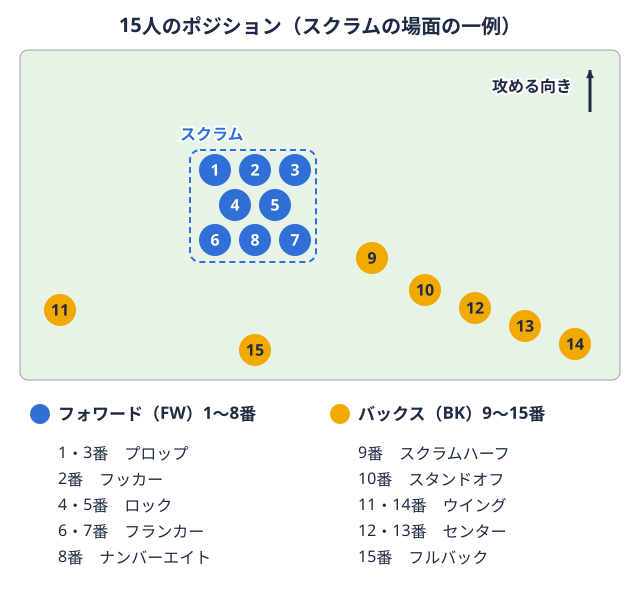

トレーニング 2026-09-15
ラグビーのオフシーズン筋トレメニュー｜週の回し方の例と部位別の種目【大学生部員向け】
オフシーズンの筋トレは、目的を決めずに続けると、何をどの順番でやるのか分からなくなりがちです。この記事では、期分けの考え方、部位別の種目、週の回し方の例、FW背番号1〜8番の8人。スクラムを組み、体をぶつけてボールを確保するのが主な役目。 
- 前半は土台づくり（フォーム・可動域・扱いやすい重量）
- 後半は当たる・押す・加速するに近い強化へ
- 週の回し方の例は「週の回し方の例（前半・後半）」の節で紹介します（編集部が組み立てた例で、特定チームの実践例ではありません）
オフシーズンをどう位置づけるか（期分けの考え方）
NSCAジャパン（全米ストレングス＆コンディショニング協会日本支部）は、トレーニングプログラムを一定期間ごとに区切り、扱う要素に変化を加えることで継続的な効果を引き出す考え方を「ピリオダイゼーション（期分け）」として紹介しています。同じ内容のトレーニングを漫然と続けていると、いずれ効果が頭打ちになりやすい傾向があるとされており、オフシーズン・プレシーズン・インシーズンといった期間ごとに目的を変えることが、体力の維持・向上や怪我の予防につながる考え方として位置づけられています。
オフシーズン前半：土台をつくる
オフシーズンに入った直後の期間は、シーズン中に落ちた基礎的な筋力・可動域を取り戻し、これから先の強化に耐えられる土台をつくる時期と捉える考え方があります。フォームの見直しや、比較的扱いやすい重量で回数を重ねるところから始めると、その後の負荷を上げる段階へスムーズにつなげやすくなります。
オフシーズン後半：専門的な強化につなげる
土台ができてきた段階では、ラグビーの動き（当たる・押す・加速する）に近づけた、より専門的な強化へと比重を移していく考え方が一般的です。ただし、どの時点で切り替えるか、どの程度負荷を上げるかは個人の状態やそれまでの経験によって差があります。自己判断だけで一気に負荷を上げるのではなく、可能であればトレーナーや顧問など専門家の助言を得ながら段階を進めることが望ましいとされています。
大学ラグビーで優先したい部位と種目の考え方
ラグビーのトレーニングでは、下半身（大腿四頭筋・ハムストリングス・大臀筋など）を軸にしつつ、体幹・上半身もバランスよく鍛える考え方が一般的に紹介されています。オフシーズンの限られた期間で網羅的に取り組むより、優先順位を意識して配分を決めることが現実的です。
下半身：対人プレーの土台
スクラム試合が止まったあとの再開方法。両チーム8人ずつが体を組み合わせて向かい合い、間に入れたボールを足で奪い合う。 用語辞典で見るやコンタクト、加速・減速といったラグビー特有の動きは下半身の力に支えられている部分が大きいとされます。スクワット系やヒンジ系（デッドリフト等）の種目が代表的に紹介されていますが、フォームが崩れた状態で重量だけを追うと怪我のリスクが高まる可能性があるため、フォーム習得を優先し、無理のない範囲で段階的に負荷を上げていくことが大切です。
用語辞典で見るやコンタクト、加速・減速といったラグビー特有の動きは下半身の力に支えられている部分が大きいとされます。スクワット系やヒンジ系（デッドリフト等）の種目が代表的に紹介されていますが、フォームが崩れた状態で重量だけを追うと怪我のリスクが高まる可能性があるため、フォーム習得を優先し、無理のない範囲で段階的に負荷を上げていくことが大切です。
体幹・股関節まわり：コンタクトの安定性
体幹や股関節まわりの筋力は、当たり負けしない姿勢の維持やタックルボールを持つ相手をつかんで地面に倒すプレー。倒したあとは、すぐにボールから離れなければならない。用語辞典で見る時の安定性に関わるとされています。プランクやその発展系の種目が定番として紹介されることが多く、道具をあまり使わずに取り組みやすい点も、限られた環境で実践する大学生にとっては現実的な選択肢になります。
首の強化
首はタックルやラック地面にあるボールの上で、両チーム1人以上が立ったまま組み合い、ボールを奪い合う状態。手は使えない。 用語辞典で見る、スクラムなど、頭部や頸部に力がかかる場面に関わる部位です。部位別の種目のひとつとして、オフシーズンのうちに取り入れる方法を考える価値があります。ただし、首の強化には研究で分かっていることと分かっていないことがあり、始め方にも注意が必要です。考え方と安全な始め方は、ラグビーの首トレーニングで整理しています。
用語辞典で見る、スクラムなど、頭部や頸部に力がかかる場面に関わる部位です。部位別の種目のひとつとして、オフシーズンのうちに取り入れる方法を考える価値があります。ただし、首の強化には研究で分かっていることと分かっていないことがあり、始め方にも注意が必要です。考え方と安全な始め方は、ラグビーの首トレーニングで整理しています。
上半身：押す・引く・支える動き
ベンチプレスやローイング系の種目で「押す」「引く」動きをバランスよく鍛える方針が一般的です。パスやオフロード、モールボールを持った選手を中心に、両チーム1人以上が立ったまま組み合い、持ち上げたボールを押し合う状態。用語辞典で見るでの押し合いといった場面を想定し、上半身の筋力もオフシーズンのうちに底上げしておきたい部位のひとつとされています。
| 部位 | 代表的な種目の例 | ねらい |
|---|---|---|
| 下半身 | スクワット系、ヒンジ系（デッドリフト等） | 対人プレー・加速減速の土台 |
| 体幹・股関節 | プランク系、股関節まわりの補強種目 | コンタクト時の姿勢安定 |
| 上半身 | ベンチプレス系、ローイング系 | パス・オフロード・押し合いの力 |
具体的な重量・回数・セット数は、個人の経験年数や体格、既往歴によって適切な範囲が大きく異なります。この記事では、出典で確認できない重量・回数の数値は示しません。実施にあたっては大学の部やトレーナー、顧問と相談しながら、無理のない範囲で段階的に進めることをおすすめします。
週の回し方の例（前半・後半）
以下は、上の考え方をもとに編集部が組み立てた一例で、特定チームの実践例ではありません。頻度や種目の割り振りは、練習日程・授業・体の状態に合わせて調整してください。ここでは頻度や回数の推奨はせず、部位の割り振り方の例だけを示します。
| 曜日の例 | 前半（土台づくり） | 後半（専門的な強化） |
|---|---|---|
| 月 | 下半身：フォーム重視のスクワット系・ヒンジ系、体幹（プランク系） | 下半身：スクワット系・ヒンジ系で負荷を段階的に上げる、加速・方向転換につながる動き |
| 水 | 上半身：ベンチプレス系・ローイング系をフォーム重視で | 上半身：押す・引く種目に加え、接触を想定した動き |
| 金 | 全身の補強：股関節まわり、首、自重種目 | 全身：下半身と体幹の複合的な動き、首 |
| 土（任意） | 軽い補強とモビリティ（可動域） | 軽い補強とモビリティ（可動域） |
後半の「ラグビーの動きに近い強化」は、当たる・押す・加速するといった場面を想定した種目への切り替えを指します。切り替える時点や負荷の上げ方は個人差が大きいため、トレーナーや顧問と相談しながら進めてください。
授業や試験が重なる週は、頻度を落とす、種目数を絞るなど、継続できる形に調整します（後述の「大学生ならではの環境で実践する工夫」と同じ考え方です）。
FWとBKで変えたいところ
コナミスポーツが公開しているラグビー向けのトレーニング資料では、フォワードは「パワーとスピードの強化が中心」で、特にスクラムでは相手のパワーに対抗するため、重い負荷での瞬間的なパワー発揮が必要と説明されています。バックスは「高いランニングスピードの強化が中心」で、相手のタックルをかわす素早いステップも必要なため、軽い負荷でのハイパワートレーニングで一歩目の素早さを強化する、と書かれています。この資料の具体的なメニューは専用の測定機器を使ったもので、そのまま部活に当てはめられるものではありません。ポジションによる狙いの違いとして参考にしてください。
| FW | BK | |
|---|---|---|
| 比重を置きたい方向（資料の説明） | パワーとスピード。押す・当たるための、重い負荷での瞬発的なパワー | 高いランニングスピードと素早いステップ。一歩目の素早さ |
| 種目選びの目安（編集部の整理） | 下半身・体幹・上半身の押す動きの比重を高める | 加速・方向転換につながる動きの比重を高める |
ポジションごとの役割は、ラグビーのポジション一覧と役割、ラグビーのロック練習法、ラグビーのナンバーエイトの動き方でも確認できます。
大学生ならではの環境で実践する工夫
社会人アスリートやプロ選手を想定した記事の多くは、専用のトレーニング施設や専属のトレーナーがいることを前提にしている場合があります。一方で大学の部活動では、大学のトレーニングルームの利用時間が限られていたり、器具の台数が少なく順番待ちが発生したりすることも珍しくありません。こうした環境を前提に、次のような工夫が現実的な選択肢になります。
- 合同トレーニングの時間を最大限活用する：個人任せのメニューになりがちな時間こそ、期分けの考え方に沿って「今は土台づくりの時期」「そろそろ強度を上げる時期」といった共通認識を仲間と持っておくと、時間の使い方に迷いが減ります。
- 器具が限られる場合は自重種目を組み合わせる：プランクや自重スクワットなど、器具がなくても取り組める種目を組み合わせることで、混雑する時間帯でもトレーニングを止めずに続けやすくなります。
- 仲間とフォームを確認し合う：専属トレーナーが常時いるとは限らない環境では、部員同士でフォームを動画に撮って確認し合うといった工夫も、怪我予防の観点から役立つとされています。
- 授業・試験期間との両立を見込んでおく：オフシーズンは学業のスケジュールとも重なりやすい時期です。無理に毎回同じ強度を維持しようとせず、忙しい週は頻度を落とすなど、継続できる形に調整することも大切です。
負荷設定と怪我予防で気をつけたいこと
オフシーズンの身体づくりは、シーズン中の怪我のリスクを減らす目的も兼ねています。だからこそ、焦って負荷を上げすぎることは避けたい行動です。
- フォームを優先する：フォームが崩れた状態での高負荷トレーニングは、怪我につながる可能性があるとされています
- 休養を取る：休養を十分に取らないまま毎日高強度のメニューをこなすと、オーバートレーニングにつながる可能性があるとされています
- 個人差を前提にする：「この重量・回数が正解」という唯一の答えはなく、体調や技術習得度に応じて調整します
- 相談する：判断に迷う場合は、自己流で進めず、部のトレーナーや顧問、可能であれば専門のトレーニング指導者に相談します
- 回復の土台を整える：栄養や睡眠といった回復面の土台があってこそ筋力トレーニングの効果も出やすくなるとされています。食事はラグビーの増量メニュー、プロテインはラグビーのプロテインの選び方を参照してください
World Rugbyは、傷害予防エクササイズプログラム「Activate」を公開しています。公式資料では、トレーニングセッションや試合前のウォームアップの一環として使うよう設計された、構造化された漸進的なプログラムで、成人用（18歳以上）の版があると説明されています。ウォームアップに取り入れる方法は、ラグビーのウォームアップで怪我予防で扱っています。
部位ごとのケガの予防は、ハムストリング肉離れ、腰痛、前十字靭帯損傷の各記事で確認できます。
オフシーズン明け、シーズンへどうつなげるか
オフシーズンの身体づくりは、それ自体が目的ではなく、次のシーズンに向けた準備です。自分の所属するチームが対抗戦関東の大学ラグビーの大会区分の一つ。Aグループ・Bグループに分かれて戦う。用語辞典で見る・リーグ戦関東の大学ラグビーのもう一つの大会区分。1部・2部など「部」に分かれて戦う。用語辞典で見る・関西リーグ・九州リーグのどのカテゴリーに属し、直近のシーズンでどのあたりの順位にいたかを把握しておくと、オフシーズンに取り組む姿勢にも張り合いが出てきます。たとえば関東大学対抗戦Aグループの順位表や関東大学リーグ戦1部の試合日程からラグビーマニアの一次データを確認し、自チーム・対戦相手の立ち位置を意識しながらオフシーズンの計画を立ててみてください。
よくある質問
週に何回やればよいですか
この記事では、出典で確認できた推奨回数を示せないため、回数は書いていません。練習日程、授業、体の状態によって変わるため、トレーナーや顧問と相談して決めてください。忙しい週は頻度を落とす、種目を絞るといった調整も選択肢です。
器具がない・ジムが混むときは、自重だけで足りますか
自重だけで足りるかどうかは、目的や経験年数によって変わるため、一概には言えません。器具が限られる場合は、プランクや自重スクワットなどを組み合わせて、混雑する時間帯でもトレーニングを止めない工夫が紹介されています。
増量（食事）と並行してよいですか
食事とトレーニングは、回復面でつながっていると紹介されています。増量の考え方はラグビーの増量メニューにまとめています。体の変化や体調に不安がある場合は、トレーナーや医療機関に相談してください。
オフシーズン明けの体力測定は、何で確かめますか
測定の方法はチームによって異なります。持久力の測定のひとつとして、ラグビーのブロンコテストがあります。
高校生・新入生は何から始めればよいですか
大学入学前の準備は、ラグビーの体づくり（高校生が大学入学までにやっておきたい準備）で扱っています。
まとめ
オフシーズンの筋トレは、なんとなく種目をこなすのではなく、「今の時期は何のためのトレーニングか」という期分けの考え方を持つことで、より効果的に取り組みやすくなります。大学ラグビーの現場では下半身・体幹・上半身をバランスよく優先しつつ、大学の施設や仲間との時間を工夫しながら実践することが現実的です。負荷設定は個人差が大きい領域のため、無理のない範囲で、必要に応じてトレーナーや顧問と相談しながら進めてください。オフシーズンの積み重ねを、シーズン開幕後の自チームの戦いぶりにつなげていきましょう。
出典
この部活・競技を応援したい方へ
取材してほしい部活を募集中
部活を続けながら、就活も進めたい方へ
体育会の学生のための就活相談です。無料で、メールアドレス・学年・所属の入力だけで始められます。